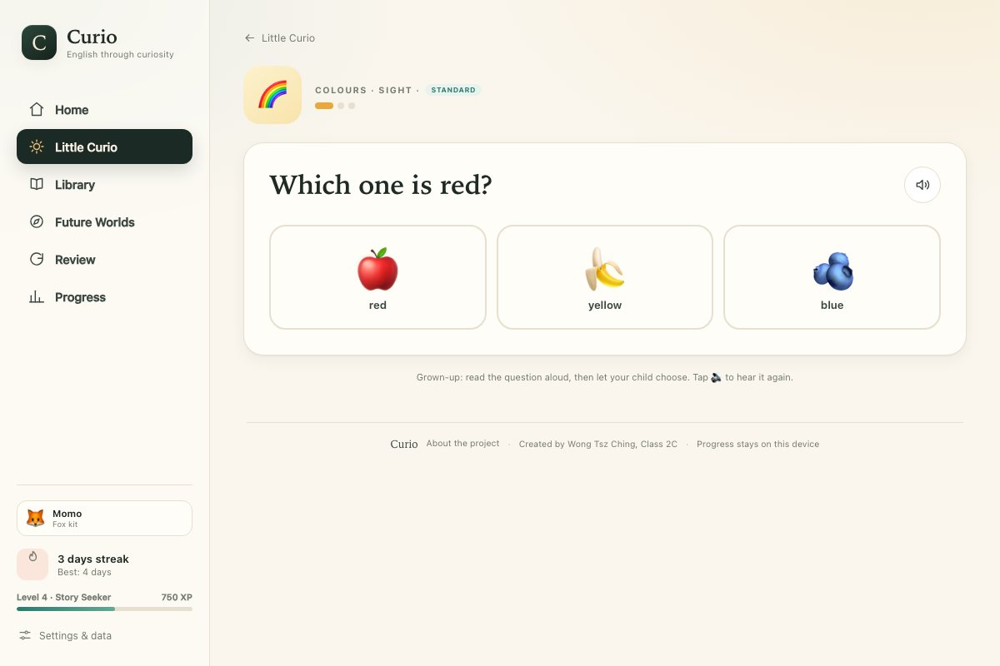
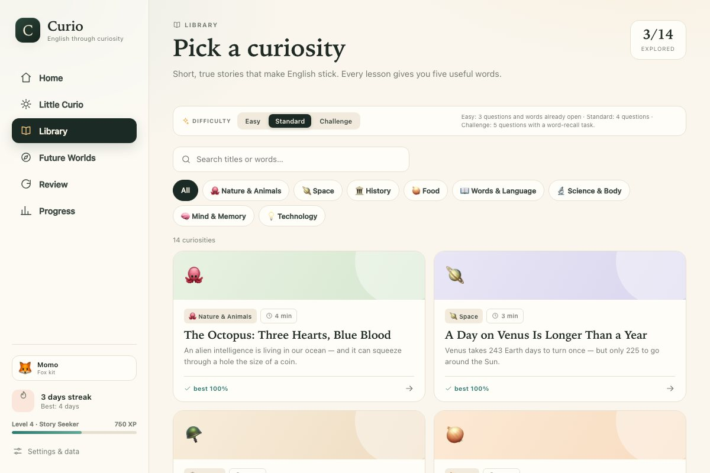
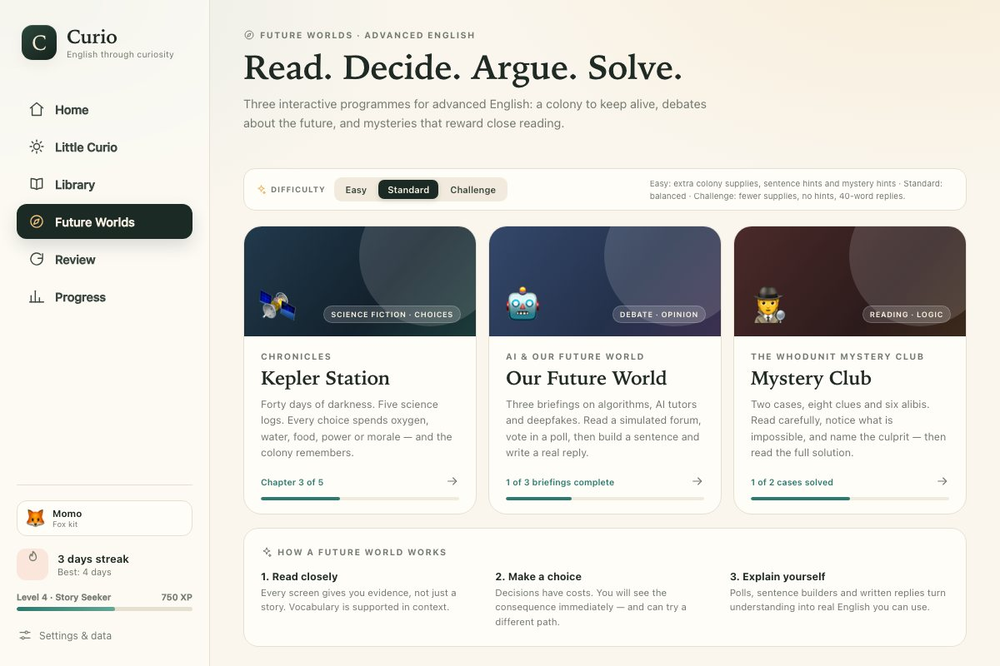
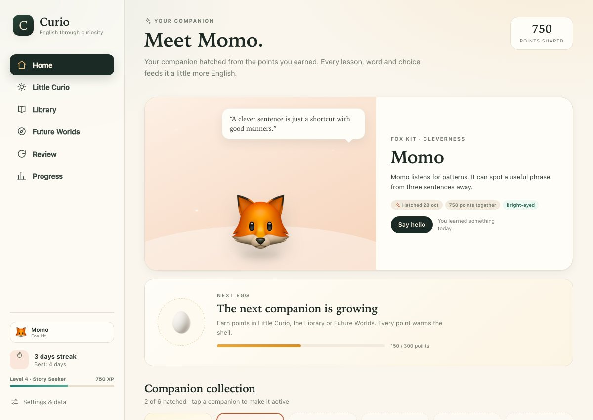
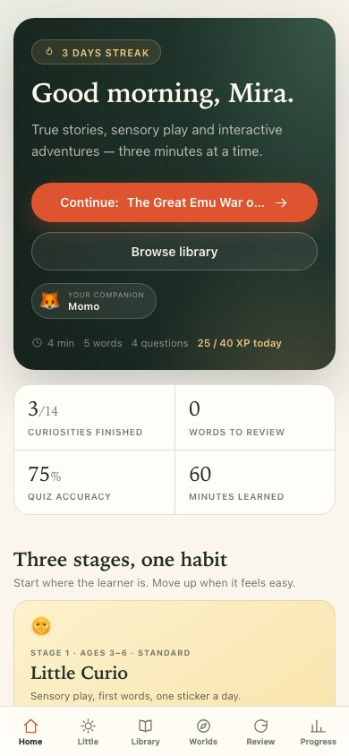

Read something worth retelling
Every library lesson begins with a true story: a moon that is drifting away, a war against emus, the first computer bug. You finish with something to tell someone.
Short true stories, sensory play and interactive adventures — with progress that follows you and a companion that grows as you learn.
No accounts. No ads. Progress stays on your device.
Most English apps ask you to remember. Curio gives you something worth remembering — a strange fact, a difficult choice, a mystery to solve — and builds the language around it.
Every library lesson begins with a true story: a moon that is drifting away, a war against emus, the first computer bug. You finish with something to tell someone.
Five words per story, a quiz that explains each answer, and a writing prompt. Words you miss come back later for review, not just once.
XP, levels, streaks and a visible record of every learning day. Your progress stays on your device, and it is yours to export.
From a child's first spoken colour word to a teenager defending an opinion about AI, the difficulty and the subject change — the habit stays.

Six picture games that turn a new English word into a sound, a colour and a movement. An adult reads the prompt aloud; the child taps, listens and says the word back.

Fourteen original true-story lessons in clear B1–B2 English. Each one gives you five useful words, a short comprehension quiz and a prompt worth writing about.

Three interactive programmes for learners ready to read closely, weigh evidence and explain a point of view in English.
Five science logs. Forty days of darkness. Every choice spends oxygen, water, food, power or morale — and the colony remembers.
Science fiction · systems thinkingAlgorithms, AI tutors and deepfakes. Read a simulated forum, vote in a poll, build a complex sentence and write a reply that takes a position.
Debate · opinion writingA burnt page, a cancelled train, a glove in a door. Read the evidence, test every alibi and name the culprit before the solution reveals itself.
Close reading · logical deductionChange the level on any stage page. Little Curio changes the number of pictures; the Library changes the number of questions and adds a word-recall task on Challenge; Future Worlds changes colony supplies, hints and writing requirements. Your choice is saved per stage.
Curio is not a library of PDFs with a score at the end. The app remembers what you have read, which words are fading and how many days in a row you have shown up.
Every 300 points warms an egg. Six companions hatch across the journey — Pip, Momo, Nori, Kiko, Lumi and Astra — each with a trait and a voice. Switching your active companion is one tap.
Meet the companions →
XP, eight levels, a daily goal, streaks, a 14-day chart and a six-month consistency map.
A word bank with Again / Good / Easy grading schedules each word before it fades.
No accounts, no tracking, no uploads. Export a JSON file whenever you want to move your progress.
The same app, with a bottom navigation bar on a phone and a sidebar on a larger screen.

The whole experience is built for short sessions: one story, five words, four or five questions. On a phone, Curio opens in the browser and remembers where you stopped.
Little Curio for sensory play, the Library for reading, or Future Worlds for an adventure. Each stage keeps its own Easy, Standard or Challenge setting.
Listen, tap, read, decide. Curio explains every answer and lets you hear the words aloud. The writing prompt is saved as you type.
Your streak, review queue and companions are waiting. Three minutes today is worth more than two hours on Sunday.
Use Little Curio with a child at the table. Read the prompt aloud, let them tap, and finish by saying the new word together.
Teenagers and adults can read a story on the bus, collect five words, then argue about AI or solve a case on a longer evening session.
No logins to manage. Students use their own device, keep their own progress, and choose the level that fits the task.
Yes. There are no accounts, no advertisements and no in-app purchases. It is a student educational project.
Little Curio is designed for ages 3–6 with an adult nearby. The Curiosity Library suits roughly ages 8–12 and older learners who want clear B1–B2 reading. Future Worlds is for confident readers (around 13+) who enjoy argument and deduction.
Progress is saved in your browser’s local storage on the device you use. It is not sent to a server. You can export a JSON backup from Settings & data and import it on another browser.
Once the page and its files have loaded, the activities work in the browser. Speech uses the voices built into your device or browser. The site itself needs a connection the first time it is opened.
Yes. There is nothing to sign into and no class data is collected. Each student keeps a separate progress record on their own device, and the three difficulty levels make it easy to set different expectations for the same text.
No. Curio is a practice tool. It gives learners more reading, vocabulary and thinking time; a teacher still provides feedback, conversation and guidance.
No sign-up. Pick a stage, choose a level, and start with one story.